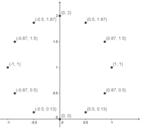

Aufgabe 2.10
Bestimmen Sie mittels einer Wertetabelle den Graphen der Funktion
\[r=2\sin\varphi\;\;\;\;\text{ für }\;\;\;\;0\leq \varphi\leq 2\pi\]
Weisen Sie nach, dass derselbe Graph in kartesischen Koordinaten durch folgende Gleichung ausgedrückt werden kann:
\[x^2+(y-1)^2=1\]
- Erstellen Sie eine Wertetabelle in $30°$-Schritten
- Nutzen Sie die Transformationsformeln: $x = r\cos\varphi$, $y = r\sin\varphi$
- Setzen Sie die polaren Koordinaten in die kartesische Gleichung ein
- Vereinfachen Sie algebraisch
| $\varphi$ | $0°$ | $30°$ | $60°$ | $90°$ | $120°$ | $150°$ | $180°$ |
| $r$ | $0$ | $1$ | $\sqrt{3}$ | $2$ | $\sqrt{3}$ | $1$ | $0$ |
| $x$ | $0$ | $0.87$ | $0.87$ | $0$ | $-0.87$ | $-0.87$ | $0$ |
| $y$ | $0$ | $0.5$ | $1.5$ | $2$ | $1.5$ | $0.5$ | $0$ |

Die Punkte liegen auf einem Kreis mit Mittelpunkt $(0|1)$ und Radius $1$.
Nachweis der Äquivalenz:
Schritt 1: Kartesische Kreisgleichung \[x^2 + (y-1)^2 = 1\]
Schritt 2: Ausmultiplizieren \[x^2 + y^2 - 2y + 1 = 1\] \[x^2 + y^2 = 2y\]
Schritt 3: In Polarkoordinaten übersetzen Mit $x = r\cos\varphi$, $y = r\sin\varphi$ und $x^2 + y^2 = r^2$: \[r^2 = 2r\sin\varphi\]
Schritt 4: Vereinfachen (für $r \neq 0$) \[r = 2\sin\varphi\]
Dies ist genau die gegebene polare Gleichung. Für $r = 0$ ist die Gleichung trivialerweise erfüllt (Punkt im Ursprung für $\varphi = 0$ oder $\varphi = \pi$).
Hinweis für GeoGebra:
Parameterkurve: Kurve[2*sin(t)*cos(t), 2*sin(t)*sin(t), t, 0, 2*pi]
Im Video: Etappe 7 · Geometrische Orte bei 6:19